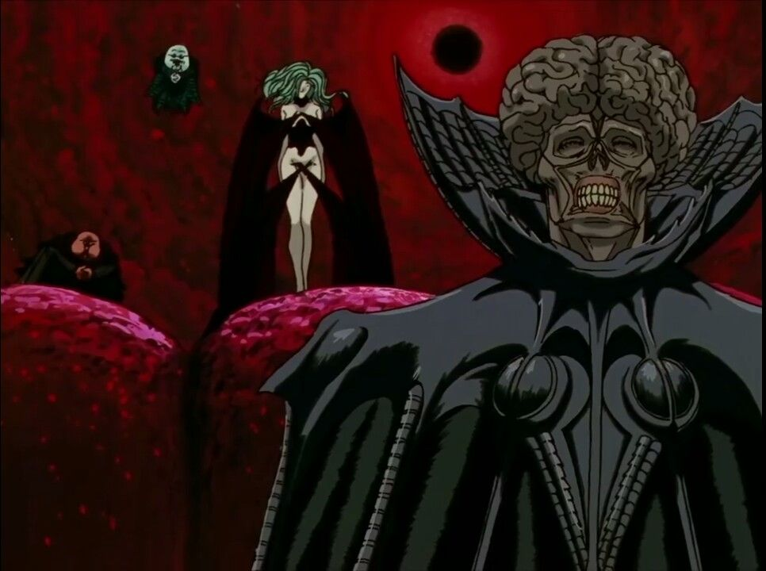

GUTS
GRIFFIT
GUTS AND FRIENDS
HAWK
Avtor
PACANY
Длань Господа — группа особо зловещих и могущественных существ, служащих непосредственно «Господу» — Идее Зла. Длань Господа направляет человеческую историю и играет судьбами людей. На протяжении истории люди поклонялись им как ангелам или языческим богам. Тем не менее члены Длани Господа, несмотря на все свое могущество, не вполне неуязвимы и не могут полностью предсказывать будущее. В ней пять членов: Войд, Конрад, Убик, Слан и Фемто (Гриффит). Гриффит вступил в ряды Длани Господа прямо по ходу повествования, в конце «Золотого века», до этого членов Длани Господа было четверо. Все члены Длани Господа когда-то были людьми, носившими королевский бехелит и сумели вознестись благодаря Затмению, событию, наступающему раз в 216 лет. Войд — старейший из нынешнего состава Длани Господа, но он, возможно, не был первым: еще тысячу лет назад царство Гейзериха было повержено четырьмя или пятью «ангелами». Это может значить, что состав Длани Господа менялся в прошлом и, что ее члены все-таки смертны.
